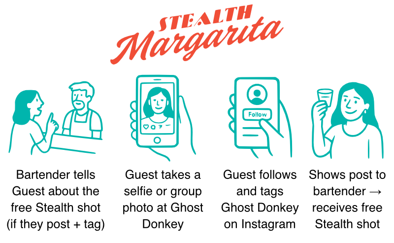

Stealth Margarita Campaign
Lead: Mike Mirabal
Hosted via: https://mike-mirabal.github.io/ghostdonkey-stealthmarg-campaign

🎯 Objective
This is a two-phase campaign designed to grow Ghost Donkey's visibility, digital presence, and sales — with no cost to management, no tech work, and no need for staff to track anything manually. The entire system runs off printed materials and self-guided guest interaction.
- Phase 1: Guests follow
@ghostdonkeydallas and post a selfie or group photo tagging #GhostDonkeyDallas → receive a free Stealth shot.
- Phase 2: Guests leave a Google review and show it at the bar → receive a free Stealth shot.
- Bonus: Anyone who orders a full Stealth Margarita can scan a QR code (on a printed card) to log their order and compete for a leaderboard prize. No staff involvement needed.
Benefit: This drives brand reach, local search ranking, and repeat sales — all built around a single high-performing product.
📅 Campaign Phases
Phase 1: Instagram Growth (June)
- Offer: Free Stealth Margarita shot for following
@ghostdonkeydallas and tagging us in a photo of themselves or their group using #GhostDonkeyDallas.
- Goal: Boost brand visibility, create content, and grow follower base through human-centered posts.
Phase 2: Google Review Drive (July)
- Offer: Free Stealth Margarita shot for leaving a Google review and showing it to staff.
- Goal: Improve our visibility in local search and build long-term trust.
🏆 Leaderboard (Optional)
Any guest who orders a full Stealth Margarita can opt into a self-logged leaderboard by scanning a QR code printed on a small card shown to them at the bar. The code links to a Google Form where they log each full Stealth Margarita they purchase. No staff action required.
- Tracked via: Name or IG handle + date of order
- Leaderboard visible via: Glide link (shared on flyers or story highlights)
- Top guest wins: A limited-edition Ghost Donkey T-shirt or merch item (low cost, high bragging rights)
📊 Success Metrics
- Instagram followers gained (tracked weekly)
- Guest social media posts tagging
@ghostdonkeydallas + #GhostDonkeyDallas
- Google reviews added (counted weekly)
- Guest mentions of the campaign (staff feedback)
Current Metrics:
IG Followers: 1,610
#GhostDonkeyDallas posts: 15
Phase 1 Goals:
Grow Instagram followers to 2,000
Reach 100 #GhostDonkeyDallas posts
✅ Current Status
- Strategy complete
- Storyboards and flyer text ready
🚀 Next Steps
- Design flyer and QR code card
- Team onboarding
- Launch campaign June 1
Created by Mike Mirabal — ready to share, test, and grow 🍸